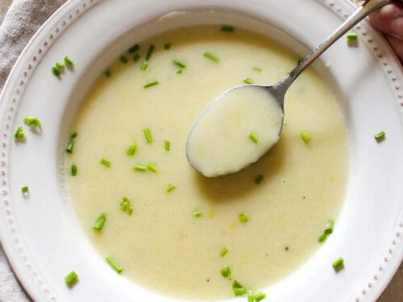

Julia Child's Potato and Leek Soup

Description
Potato and Leek Soup, or Potage Parmentier if you're into that, is a classic soup dish consisting of, well, Potato and Leek. This recipe comes from the cookbook of the late Julia Child, world renowned chef, and culinary educator. This velvety and soothing dish makes an amazing first course for just about any meal. This recipe serves about 6 bowls, so adjust as needed for everyone to get seconds!
Ingredients
- Two tablespoons neutral oil (canola, grape-seed, etc)
- One pound medium russet potatoes, peeled and roughly choppped)
- One pound leeks, cleaned and thinly sliced
- Six cups vegetable or chicken stock
- 1/2 cup heavy cream
- One to two tablespoons lemon juice, fresh squeezed
- 1/3 cup parsley or chives, minced
- 1/2 cup creme fraiche
- Salt, to taste
Steps
- Add Oil to a large Dutch Oven or Stockpot and put over Medium heat
- Add Potato and Leek to the oil and cook for 8-12 minutes until the vegetables start to soften and brown slightly. Stir occasionally
- Add Stock to the vegetables and bring to a full boil
- Let simmer for 30-40 minutes until vegetables are tender
- Blend the soup until smooth using either an immersion blender or traditional blender in batches
- Stir in Heavy Cream
- Add Salt to taste (start with One Tablespoon and go from there, tasting regularly)
- Stir in Lemon Juice
- Serve with Creme Fraiche and Parsley/Chives as garnish